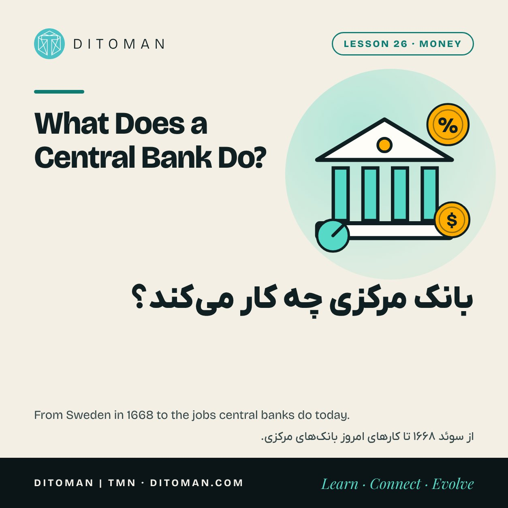

¿Qué hace un banco central?
بانک مرکزی چه کار میکند؟
Casi todos los países tienen uno, y las noticias lo mencionan a diario. Esta lección explica con palabras sencillas qué es un banco central, de dónde salió la idea y cuáles son sus principales funciones.
تقریباً هر کشوری یکی دارد و خبرها هر روز اسمش را میآورند. این درس ساده توضیح میدهد بانک مرکزی چیست، ایدهاش از کجا آمد و کارهای اصلیاش کداماند.
Contenido de la lección
محتوای درس
Lee la lección en inglés o persa.
درس را به فارسی یا انگلیسی بخوانید.
Cuando se dice «el banco central subió los tipos» o «el banco central imprimió dinero», se habla de él como de una sola persona poderosa. En realidad es una institución con una lista corta de funciones, y cada función tiene una razón.
01. Qué es un banco central
Un banco central es una institución pública en el centro del sistema monetario de un país. Los bancos comunes atienden a clientes. El banco central atiende a los bancos, al gobierno y al sistema en su conjunto.
02. Dónde empezó la idea
El banco central más antiguo del mundo es el de Suecia. El museo del Banco de Inglaterra señala que el Riksens Ständers Bank, hoy Sveriges Riksbank, se fundó en 1668 a partir de los restos de un banco anterior quebrado, y lo llama el banco central más antiguo del mundo.
El Banco de Inglaterra llegó después, en 1694, creado sobre todo para prestar al gobierno y financiar una guerra. Así que los primeros bancos centrales nacieron de las necesidades de los Estados, no de la teoría.
03. Por qué Estados Unidos llegó tarde
Tras el pánico financiero de 1907, EE. UU. era la única gran potencia financiera sin banco central. El presidente Woodrow Wilson firmó la Ley de la Reserva Federal el 23 de diciembre de 1913, que creó la Reserva Federal.
| Entidad | Año | Nota |
|---|---|---|
| Riksbank de Suecia | 1668 | Descrito como el banco central más antiguo del mundo |
| Banco de Inglaterra | 1694 | Creado sobre todo para prestar al gobierno para una guerra |
| Reserva Federal de EE. UU. | 1913 | Ley firmada el 23 de diciembre, tras el pánico de 1907 |
04. Las funciones principales
La propia descripción del Banco de Inglaterra muestra la lista típica.
Dinero y pagos: emite los billetes y gestiona los sistemas que mueven el dinero entre bancos.
Supervisar a los bancos: a través de su Prudential Regulation Authority supervisa más de 1.300 entidades, para que un banco en apuros no arrastre al resto.
Tipos de interés: fija el Bank Rate, el coste base del crédito que influye en todos los demás tipos.
Reservas: custodia las reservas de oro del país.
05. La función de estabilidad de precios
Los tipos de interés sirven a un objetivo. En el Reino Unido, el gobierno fija el objetivo de inflación del Banco en el 2% anual, medido por los precios al consumo. Subir el tipo tiende a enfriar el gasto y la subida de precios; bajarlo tiende a animar el crédito y el gasto.
La lección 12 mostró por qué importan los precios estables: la subida de precios erosiona lo que compra un sueldo. El banco central es la institución encargada de que esa erosión sea pequeña y previsible.
06. Prestamista de última instancia
En un pánico, un banco sano puede quedarse de repente sin efectivo porque todos quieren su dinero a la vez. El banco central puede prestarle contra buenas garantías. Esa es la idea del «banco de los bancos».
07. Qué no hace
Un banco central no lleva tu cuenta ni guarda tus ahorros. Eso lo hacen los bancos comerciales. Tampoco controla todos los precios. Influye en las condiciones, y los resultados llegan con retraso e incertidumbre.
08. Por qué esto se conecta con el dinero digital
La lección 11 preguntó qué respalda a un dólar digital, y la lección 20 preguntó si los bancos desaparecerán. Ambas preguntas son más fáciles cuando conoces el papel del propio banco central.
Qué sacar de esto
Un banco central es la institución pública en el centro del sistema monetario de un país.
El más antiguo es el Riksbank de Suecia, de 1668; el Banco de Inglaterra le siguió en 1694; la Ley de la Reserva Federal de EE. UU. se firmó el 23 de diciembre de 1913.
Funciones típicas: billetes y pagos, supervisión de los bancos, fijación del tipo de interés oficial, gestión de reservas.
Los tipos de interés sirven a un objetivo: precios estables, como el objetivo del 2% en el Reino Unido.
No es tu banco y no controla todos los precios.
وقتی میگویند «بانک مرکزی نرخ را بالا برد» یا «بانک مرکزی پول چاپ کرد»، از آن مثل یک آدم قدرتمند حرف میزنند. در واقع نهادی است با فهرست کوتاهی از وظایف، و هر وظیفه دلیلی دارد.
۰۱. بانک مرکزی چیست
بانک مرکزی نهادی عمومی در مرکز نظام پولی کشور است. بانکهای معمولی به مشتریها خدمت میدهند. بانک مرکزی به بانکها، دولت و کل نظام خدمت میدهد.
۰۲. ایده از کجا شروع شد
قدیمیترین بانک مرکزی دنیا سوئدی است. موزهی بانک انگلستان یادآوری میکند که «بانک مجلس ملک» (Riksens Ständers Bank)، که امروز «ریکسبانک سوئد» است، در ۱۶۶۸ از بازماندهی یک بانک ورشکستهی قبلی تأسیس شد و آن را قدیمیترین بانک مرکزی دنیا مینامد.
بانک انگلستان بعد از آن، در ۱۶۹۴ آمد و عمدتاً برای این ساخته شد که به دولت وام بدهد تا هزینهی یک جنگ تأمین شود. پس نخستین بانکهای مرکزی از نیاز دولتها متولد شدند، نه از نظریه.
۰۳. چرا آمریکا دیر رسید
بعد از هراس مالی ۱۹۰۷، آمریکا تنها قدرت مالی بزرگی بود که بانک مرکزی نداشت. رئیسجمهور وودرو ویلسون قانون فدرال رزرو را در ۲۳ دسامبر ۱۹۱۳ امضا کرد و فدرال رزرو شکل گرفت.
| نهاد | سال | توضیح |
|---|---|---|
| ریکسبانک سوئد | ۱۶۶۸ | قدیمیترین بانک مرکزی دنیا |
| بانک انگلستان | ۱۶۹۴ | عمدتاً برای وام به دولت در جنگ تأسیس شد |
| فدرال رزرو آمریکا | ۱۹۱۳ | قانون در ۲۳ دسامبر، پس از هراس ۱۹۰۷ امضا شد |
۰۴. وظایف اصلی
توصیف خود بانک انگلستان فهرست معمولی را نشان میدهد.
پول و پرداخت: اسکناس منتشر میکند و سامانههایی را اداره میکند که پول را بین بانکها جابهجا میکنند.
نظارت بر بانکها: از طریق «مرجع نظارت احتیاطی» خود بر بیش از ۱٬۳۰۰ مؤسسه نظارت میکند تا بانکی که شکست میخورد بقیه را با خود نکشد.
نرخ بهره: «نرخ بانکی» را تعیین میکند، یعنی هزینهی پایهی وامگرفتن که روی همهی نرخهای دیگر اثر میگذارد.
ذخایر: از ذخایر طلای کشور نگهداری میکند.
۰۵. وظیفهی ثبات قیمتها
نرخ بهره در خدمت یک هدف است. در بریتانیا دولت هدف تورم بانک را سالانه ۲٪ تعیین میکند که با قیمت مصرفکننده سنجیده میشود. بالا بردن نرخ معمولاً خرج و افزایش قیمتها را خنک میکند؛ پایین آوردنش معمولاً وامگرفتن و خرج را تشویق میکند.
درس ۱۲ نشان داد چرا قیمتهای باثبات مهماند: افزایش قیمتها آنچه حقوق میخرد را میفرساید. بانک مرکزی نهادی است که مأموریت دارد این فرسایش را کوچک و قابلپیشبینی نگه دارد.
۰۶. وامدهندهی آخرین پناه
در هراس مالی، یک بانک سالم هم ممکن است ناگهان نقدینگی نداشته باشد، چون همه یکجا پولشان را میخواهند. بانک مرکزی میتواند در برابر وثیقهی خوب به آن وام بدهد. ایدهی «بانکِ بانکها» همین است.
۰۷. کارهایی که نمیکند
بانک مرکزی حساب شما را اداره نمیکند و پسانداز شما را نگه نمیدارد؛ بانکهای تجاری این کار را میکنند. همهی قیمتها را هم کنترل نمیکند. بر شرایط اثر میگذارد و نتیجهها با تأخیر و عدم قطعیت میآیند.
۰۸. چرا به پول دیجیتال ربط دارد
درس ۱۱ پرسید پشتوانهی دلار دیجیتال چیست و درس ۲۰ پرسید آیا بانکها ناپدید میشوند. هر دو پرسش وقتی سادهتر میشوند که نقش خود بانک مرکزی را بدانید.
چه برداشتی کنیم
بانک مرکزی نهادی عمومی در مرکز نظام پولی کشور است.
قدیمیترین، ریکسبانک سوئد از ۱۶۶۸ است؛ بانک انگلستان در ۱۶۹۴ آمد؛ قانون فدرال رزرو آمریکا در ۲۳ دسامبر ۱۹۱۳ امضا شد.
وظایف معمول: اسکناس و پرداخت، نظارت بر بانکها، تعیین نرخ بهرهی پایه، نگهداری ذخایر.
نرخ بهره در خدمت یک هدف است: قیمتهای باثبات، مثلاً هدف ۲٪ در بریتانیا.
بانک شما نیست و همهی قیمتها را کنترل نمیکند.
Dos lecciones relacionadas
دو درس مرتبط
La lección 11 pregunta qué hay detrás de un dólar digital. La lección 20 pregunta si los bancos desaparecerán.
درس ۱۱ میپرسد پشت دلار دیجیتال چه چیزی ایستاده. درس ۲۰ میپرسد آیا بانکها ناپدید میشوند.
Conceptos clave
مفاهیم کلیدی
- Banco central
- Banco comercial
- Tipo de interés de referencia
- Objetivo de inflación
- Supervisión
- Prestamista de última instancia
- Reservas
- بانک مرکزی
- بانک تجاری
- نرخ بهرهی پایه
- هدف تورم
- نظارت
- وامدهندهی آخرین پناه
- ذخایر
Objetivos de aprendizaje
اهداف یادگیری
- Decir qué es un banco central.
- Nombra tres bancos centrales antiguos y sus años.
- Enumera las principales funciones de un banco central.
- Explica por qué los tipos de interés sirven a la estabilidad de precios.
- Decir qué no hace un banco central.
- بگویید بانک مرکزی چیست.
- سه بانک مرکزی اولیه و سالهایشان را نام ببرید.
- وظایف اصلی بانک مرکزی را فهرست کنید.
- توضیح بدهید چرا نرخ بهره در خدمت ثبات قیمتهاست.
- بگویید بانک مرکزی چه کارهایی نمیکند.
Cuestionario
آزمونک
Mira qué se te ha quedado. La respuesta está bajo cada pregunta.
ببین چه چیزی در ذهنت مانده. پاسخ زیر هر پرسش آمده است.
Pregunta 1
پرسش ۱
¿Cuál se describe como el banco central más antiguo del mundo?
کدام قدیمیترین بانک مرکزی دنیا توصیف شده است؟
A. El Riksbank de Suecia, fundado en 1668
الف. ریکسبانک سوئد، ۱۶۶۸
B. La Reserva Federal, 1913
ب. فدرال رزرو، ۱۹۱۳
C. El Banco de Inglaterra, 1694
ج. بانک انگلستان، ۱۶۹۴
Respuesta correcta: A
پاسخ درست: الف
Pregunta 2
پرسش ۲
¿Por qué se creó el Banco de Inglaterra en 1694?
بانک انگلستان در ۱۶۹۴ چرا ساخته شد؟
A. Sobre todo para prestar al gobierno para una guerra
الف. عمدتاً برای وام به دولت در جنگ
B. Para dirigir supermercados
ب. برای ادارهی فروشگاهها
C. Para extraer oro
ج. برای استخراج طلا
Respuesta correcta: A
پاسخ درست: الف
Pregunta 3
پرسش ۳
¿Cuándo firmó Woodrow Wilson la Ley de la Reserva Federal?
ودرو ویلسون قانون فدرال رزرو را کی امضا کرد؟
A. 23 de diciembre de 1913
الف. ۲۳ دسامبر ۱۹۱۳
B. 1 de enero de 1900
ب. ۱ ژانویه ۱۹۰۰
C. 4 de julio de 1776
ج. ۴ ژوئیه ۱۷۷۶
Respuesta correcta: A
پاسخ درست: الف
Pregunta 4
پرسش ۴
¿Cuál es el objetivo de inflación del Reino Unido fijado por el gobierno?
هدف تورم بریتانیا که دولت تعیین میکند چند درصد است؟
A. 2% anual
الف. سالانه ۲٪
B. 20% anual
ب. سالانه ۲۰٪
C. 0,2% anual
ج. سالانه ۰٫۲٪
Respuesta correcta: A
پاسخ درست: الف
Pregunta 5
پرسش ۵
¿Cuál de estas NO es una función típica de un banco central?
کدام یک وظیفهی معمول بانک مرکزی نیست؟
A. Llevar las cuentas de ahorro personales de todos
الف. نگهداری حسابهای پسانداز شخصی همه
B. Fijar el tipo de interés de referencia
ب. تعیین نرخ بهرهی پایه
C. Supervisar a los bancos
ج. نظارت بر بانکها
Respuesta correcta: A
پاسخ درست: الف
Fuentes
منابع
- Museo del Banco de Inglaterra: el Riksens Ständers Bank (1668), el banco central más antiguo del mundo; el Banco de Inglaterra, 1694
- Banco de Inglaterra: qué hace el Banco de Inglaterra (billetes, pagos, supervisión de más de 1.300 entidades, Bank Rate, reservas de oro)
- Banco de Inglaterra: la inflación y el objetivo del 2% fijado por el Gobierno
- Federal Reserve History: la Ley de la Reserva Federal firmada el 23 de diciembre de 1913
Los detalles de las funciones se toman del Banco de Inglaterra como ejemplo típico; otros bancos centrales difieren. No se citan los niveles actuales de los tipos porque cambian. Explicación general, no asesoramiento financiero.
جزئیات وظایف از بانک انگلستان بهعنوان یک نمونهی معمول گرفته شده؛ بانکهای مرکزی دیگر متفاوتاند. سطح فعلی نرخ بهره نیامده چون تغییر میکند. توضیح عمومی است، نه مشاورهی مالی.
با هم دنبال میکنیمSíguenos
Las nuevas lecciones se anuncian primero en los canales de Ditoman.
درسهای تازه اول در کانالهای دیتومان معرفی میشوند.